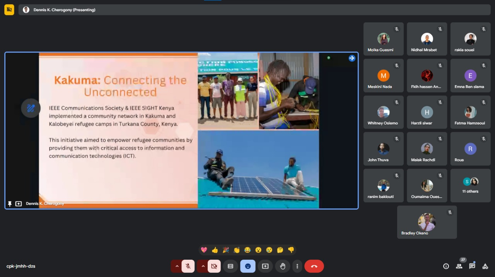
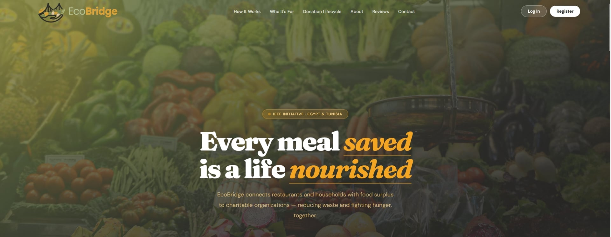
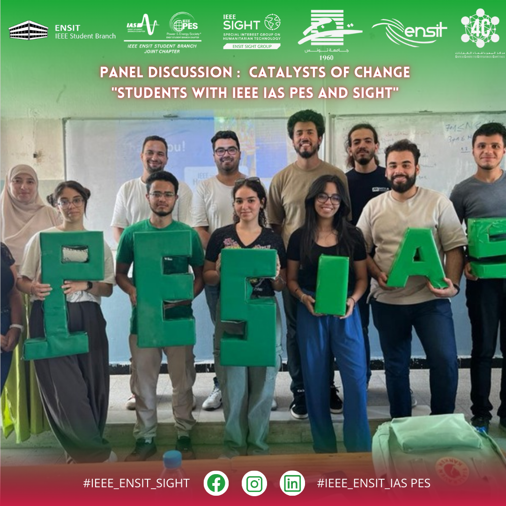

Understand
Listen to communities and learn from local knowledge before designing a solution.
 IEEE ENSIT
IEEE ENSIT
IEEE ENSIT / Special Interest Group
Special Interest Group on Humanitarian Technology
IEEE SIGHT is a global IEEE volunteer network that partners with underserved communities and local organizations to use technology for sustainable development.
Discover SIGHTEngineering for everyone
SIGHT ENSIT brings humanitarian technology to life by connecting engineering students with communities and partners working toward a more sustainable future.
We start by listening, design with empathy, and create practical solutions that respond to real needs. Every project is an opportunity to learn, collaborate, and make a lasting difference.
Our approach
Listen to communities and learn from local knowledge before designing a solution.
Turn engineering skills and creative thinking into technology that meets a real need.
Partner with volunteers, organizations, and communities to create impact together.
Build accessible, responsible projects that can keep serving people over time.
The people behind the impact


Technology in action
From community outreach to humanitarian innovation, our events turn shared knowledge into meaningful action.

Exploring practical technology for community challenges.
Read more →
Making science, discovery, and imagination accessible.
Read more →
Volunteering together to support health and community care.
Read more →
Learning the skills needed to turn ideas into impact.
Read more →
Raising awareness and standing beside young patients and families.
Read more →
Sharing conversations, perspectives, and opportunities to serve.
Read more →
Building stronger organizations through knowledge and collaboration.
Read more →
Helping students present their skills and access opportunities.
Read more →
Building safer digital communities through awareness and action.
Read more →
Connecting environmental responsibility with engineering action.
Read more →
Opening doors to learning, confidence, and possibility.
Read more →Sharing knowledge and inspiring the next generation.
Read more →
Imagining inclusive futures through creativity and technology.
Read more →
Turning humanitarian needs into bold, practical innovations.
Read more →
Discovering how engineering can respond to human needs.
Read more →
Learning, creating, and innovating for people and communities.
Read more →Celebrating ideas that use technology for social good.
Read more →
Collaborating on creative answers to real-world problems.
Read more →
Sharing the SIGHT mission and meeting future changemakers.
Read more →
Building relationships between volunteers and communities.
Read more →
Celebrating the people and values behind IEEE service.
Read more →
Connecting volunteers with opportunities to create impact.
Read more →
Connecting first aid, sustainability, and community learning.
Read more →
Welcoming students into a community of service and innovation.
Read more →
Turning volunteer energy into measurable community benefit.
Read more →
Making science and exploration accessible to curious young minds.
Read more →
Sharing tools that help students communicate knowledge clearly.
Read more →
Bringing solidarity and hope to children facing illness.
Read more →
Helping young engineers connect with opportunities and mentors.
Read more →Designing with accessibility, dignity, and everyday needs in mind.
Read more →
Taking learning, technology, and encouragement into the community.
Read more →
Listening to diverse voices on technology and humanitarian action.
Read more →
Developing practical skills for purposeful engineering projects.
Read more →
Helping changemakers communicate ideas with confidence.
Read more →
Making science a shared space for curiosity and discovery.
Read more →
Coming together around humanitarian technology and service.
Read more →
Exploring how intelligent systems can support human needs.
Read more →
Uniting volunteers around a shared vision for impact.
Read more →
Using digital skills to make information more accessible.
Read more →